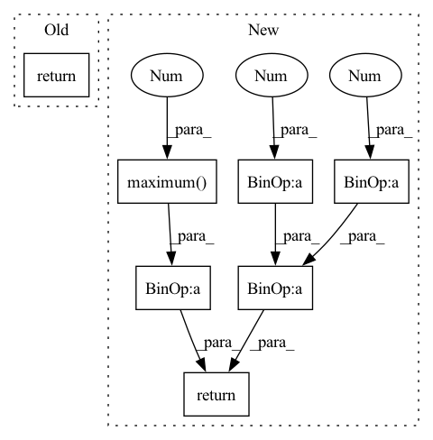

Pattern ID :5470

Before Change
def execute(self, output, target):
output = self.sigmoid(output)
output = self.bce(output, target)
return output
class SGD(object):
Usage:
After Change
pass
def execute(self, output, target):
x = 1 / (1 + jt.exp(-output))
return -(target*jt.log(jt.maximum(x,1e-20))+(1-target)*jt.log(jt.maximum(1-x,1e-20))).mean()
class L1Loss(Module):
def __init__(self):
In pattern: SUPERPATTERN
Frequency: 3
Non-data size: 7
Instances
Fragment ID: 19283702
Project Name: jittor/jittor
Commit Name: f38058bbe76d06498f184f5e34872e01d973dce1
Time: 2020-05-06
Author: 576825820@qq.com
File Name: python/jittor/nn.py
M Class Name: BCEWithLogitsLoss
N Class Name: BCEWithLogitsLoss
M Method Name: execute(3)
N Method Name: execute(3)
M Parent Class: Module
N Parent Class: Module
M File Name: python/jittor/nn.py
N File Name: python/jittor/nn.py
M Start Line: 153
M End Line: 155
N Start Line: 681
N End Line: 682
'>
Before Change
class ELU(Function):
def forward(ctx, x: ndarray, alpha: float = 1) -> ndarray:
ctx.save_for_backward(x, alpha)
return np.maximum(x, 0) + np.minimum(0, alpha * (np.exp(x) - 1))
def backward(ctx, grad: ndarray) -> ndarray:
x, alpha = ctx.saved_tensors
After Change
def forward(ctx, x: ndarray, alpha: float = 1) -> ndarray:
xp = get_array_module(x)
ctx.save_for_backward(x, alpha, xp)
return xp.maximum(x, 0) + xp.minimum(0, alpha * (xp.exp(x) - 1))
def backward(ctx, grad: ndarray) -> ndarray:
x, alpha, xp = ctx.saved_tensors
'>
Fragment ID: 19283703
Project Name: nlp-greyfoss/metagrad
Commit Name: 20b3d3fee6c6298790a73e8c49585a9dcef6d02f
Time: 2022-05-04
Author: jueying.szu@gmail.com
File Name: metagrad/functions.py
M Class Name: ELU
N Class Name: ELU
M Method Name: forward(3)
N Method Name: forward(3)
M Parent Class: Function
N Parent Class: Function
M File Name: metagrad/functions.py
N File Name: metagrad/functions.py
M Start Line: 38
M End Line: 38
N Start Line: 40
N End Line: 42
'>
Before Change
def execute(self, output, target):
output = self.sigmoid(output)
output = self.bce(output, target)
return output
class SGD(object):
Usage:
After Change
pass
def execute(self, output, target):
x = 1 / (1 + jt.exp(-output))
return -(target*jt.log(jt.maximum(x,1e-20))+(1-target)*jt.log(jt.maximum(1-x,1e-20))).mean()
class L1Loss(Module):
def __init__(self):
'>
Fragment ID: 19283701
Project Name: jittor/jittor
Commit Name: 9b6de1fbd819fa30dc18bd3b3c95544756f6a224
Time: 2020-05-07
Author: 576825820@qq.com
File Name: python/jittor/nn.py
M Class Name: BCEWithLogitsLoss
N Class Name: BCEWithLogitsLoss
M Method Name: execute(3)
N Method Name: execute(3)
M Parent Class: Module
N Parent Class: Module
M File Name: python/jittor/nn.py
N File Name: python/jittor/nn.py
M Start Line: 153
M End Line: 155
N Start Line: 625
N End Line: 626